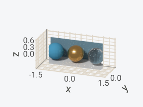
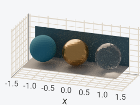
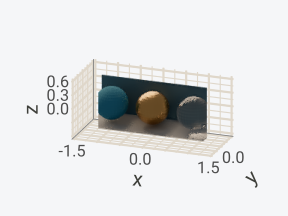
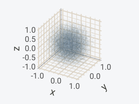

Render reflective surfaces, transparent materials and scattering
volumes with path tracing. It estimates illumination by following
sampled light paths through the scene.
backend_3d("pathtrace") renders reflections, refraction,
indirect light and scattering volumes. Its samples are deterministic for
a given seed and independent of worker count. Choosing rendering and image formats introduces
output choices; Rendering volumes and traced
surfaces covers scalar fields and ray-marched surfaces.
Materials
material_3d() controls surface reflection. Roughness
broadens the reflection, metallic gives it the fill colour, and
transmission lets light pass through a dielectric surface. The index of
refraction controls bending at the surface. The glass and
mirror presets have zero roughness.
sphere <- function(x, material, fill) {
geom_sphere_3d(data = data.frame(x = x, y = 0, z = 0),
aes(x, y, z = z), radius = .35, fill = fill, colour = NA,
material = material)
}
objects <- ggplot() +
sphere(-.9, material_3d(), "#4388A8") +
sphere(0, material_3d(metallic = 1, roughness = .25), "#D5A45D") +
sphere(.9, material_3d("glass"), "white") +
geom_polygon_3d(data = data.frame(x = c(-1.3, 1.3, 1.3, -1.3),
y = c(-.5, -.5, .5, .5), z = -.4), aes(x, y, z = z), fill = "grey75", colour = NA) +
geom_polygon_3d(data = data.frame(x = c(-1.3, 1.3, 1.3, -1.3),
y = .5, z = c(-.4, -.4, .4, .4)), aes(x, y, z = z), fill = "#607D8B", colour = NA) +
xlim(-1.4, 1.4) + ylim(-.6, .6) + scale_z_continuous(limits = c(-.6, .6))
objects + coord_3d(azimuth = -70, elevation = 20, zoom = 1.5, clip = "off", aspect = c(2.8, 1.2, 1.2),
light = light_3d(light_directional_3d(intensity = 1), ambient = .3),
backend = backend_3d("pathtrace", dpi = 96, samples = 64, bounces = 8))
Emission adds radiance at a surface. For example,
material_3d(emission = "white", emission_strength = 3)
makes mesh faces illuminate nearby geometry. Vector, raster and viewer
output use the documented Blinn-Phong mapping of the same material
parameters and add its emitted colour.
Environment light
An environment image describes radiance arriving from every
direction. Numeric arrays contain linear RGB values with dimensions
height by width by three. Radiance .hdr files preserve
values above one. PNG files are decoded from sRGB and need the suggested
png package.
environment <- array(.15, c(8, 16, 3))
environment[2:4, 4:6, 1] <- 4
environment[2:4, 4:6, 2] <- 3
environment[2:4, 4:6, 3] <- 2
lighting <- light_3d(light_environment_3d(environment, rotation = 30), ambient = 0)
objects + coord_3d(azimuth = -70, elevation = 20, zoom = 1.5, clip = "off", aspect = c(2.8, 1.2, 1.2), light = lighting,
backend = backend_3d("pathtrace", dpi = 96, samples = 64, bounces = 8,
exposure = .5, tone = "agx"))
The sampler weights environment pixels by luminance and solid angle. Multiple importance sampling combines light and surface samples, using the power heuristic described by Veach and Guibas. Other backends use the environment’s solid-angle-weighted mean as ambient light.
Noise and display
samples sets the sample budget per render. Positive
noise_threshold enables adaptive stopping after
min_samples. A progressive backend retains pixel statistics
across redraws; pixels that meet the threshold remain stopped. Changing
geometry, lights, the camera or sampling settings resets
accumulation.
objects + coord_3d(azimuth = -70, elevation = 20, zoom = 1.5, clip = "off", aspect = c(2.8, 1.2, 1.2), light = lighting,
backend = backend_3d("pathtrace", dpi = 96, samples = 16,
min_samples = 8, noise_threshold = .03, denoise = TRUE, tone = "agx"))
The native denoiser uses colour, albedo, normal and depth half
buffers in nonlinearly
weighted first-order regression. Exposure scales linear radiance by
powers of two. tone = "clip" clips it for display;
"aces" and "agx" compress highlights before
sRGB encoding.
Participating media
geom_volume_3d(mode = "absorption") describes extinction
and scattering in the path tracer. opacity is extinction
per transformed data unit; colours gives single-scattering
albedo. The Henyey-Greenstein parameter g controls
directionality: zero is isotropic and positive values favour forward
scattering.
axis <- seq(-1, 1, length.out = 7)
field <- expand.grid(x = axis, y = axis, z = axis)
field$value <- with(field, exp(-3 * (x^2 + y^2 + z^2)))
ggplot(field, aes(x, y, z = z, value = value)) +
geom_volume_3d(opacity = c(0, 2), colours = c("#88AABB", "#DDEEFF"), g = .2) +
coord_3d(light = light_3d(light_directional_3d(intensity = 1), ambient = .2),
backend = backend_3d("pathtrace", dpi = 48, samples = 16, bounces = 4))
Free-flight sampling uses delta tracking and shadow transmittance
uses ratio tracking with a conservative majorant in each grid cell,
following Novak et
al.. mode = "iso" renders a surface with the layer’s
material. Maximum-intensity projection ("mip") is available
through the raster backend.